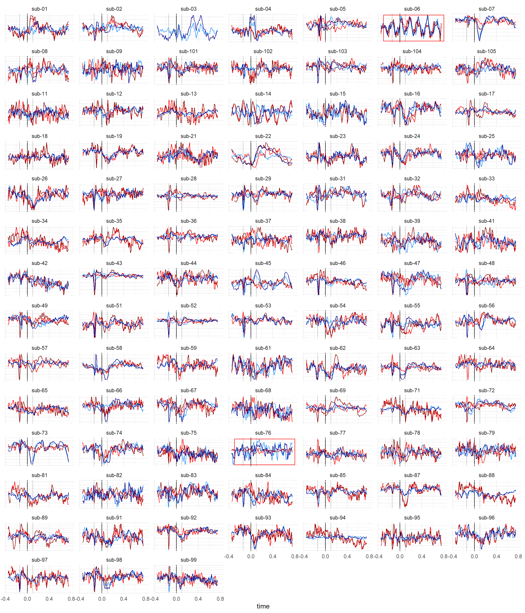

Code
library(tidyverse)
library(easystats)
library(patchwork)
library(ggside)
library(dtwclust)library(tidyverse)
library(easystats)
library(patchwork)
library(ggside)
library(dtwclust)df <- rbind(
read.csv("../data/data_hep1.csv"),
read.csv("../data/data_hep2.csv"),
read.csv("../data/data_hep3.csv"),
read.csv("../data/data_hep4.csv"),
read.csv("../data/data_hep5.csv"),
read.csv("../data/data_hep6.csv"),
read.csv("../data/data_hep7.csv"),
read.csv("../data/data_hep8.csv"),
read.csv("../data/data_hep9.csv"),
read.csv("../data/data_hep10.csv"),
read.csv("../data/data_hep11.csv")) |>
mutate(AF7 = as.numeric(standardize(AF7)),
AF8 = as.numeric(standardize(AF8)),
.by = c("Participant", "Condition", "epoch"))
df |>
summarize(n = length(unique(epoch)), .by=c("Participant", "Condition")) |>
gt::gt() |>
gt::opt_interactive()ecg <- summarize(df, ECG = median(ECG), RSP = median(RSP), .by="time") |>
mutate(ECG = standardize(ECG))exclude <- c("sub-06", "sub-76")dat <- df |>
summarize(ggdist::mean_qi(AF7, .width=0.2), .by=c("Participant", "Condition", "time")) |>
mutate(Sensor = "AF7") |>
rbind(
df |>
summarize(ggdist::mean_qi(AF8, .width=0.2), .by=c("Participant", "Condition", "time")) |>
mutate(Sensor = "AF8")
)
dat_rect <- summarize(dat, ymin = min(y), ymax = max(y), .by=c("Participant")) |>
mutate(Exclude = case_when(Participant %in% exclude ~ TRUE, .default = FALSE))
dat |>
mutate(color = paste0(Condition, "_", Sensor)) |>
ggplot() +
geom_vline(xintercept=0) +
geom_vline(xintercept=c(-0.14, 0.1), color="grey") +
geom_line(aes(x=time, y=y, color=color)) +
geom_rect(data=dat_rect, aes(xmin=-0.3, xmax=0.8, ymin=ymin, ymax=ymax, color=Exclude), alpha=0, show.legend = FALSE) +
scale_color_manual(values=c("RestingState_AF7"="dodgerblue", "RestingState_AF8"="darkblue",
"HCT_AF7"="red", "HCT_AF8"="darkred", "TRUE"="red", "FALSE"="white"),
breaks=c("RestingState", "HCT")) +
# geom_line(aes(color=Condition, group=epoch)) +
facet_wrap(~Participant, scales="free_y", ncol=7) +
theme_minimal() +
theme(axis.text.y = element_blank(),
axis.title.y = element_blank())
df <- df |>
mutate(Exclude = case_when(
Participant %in% exclude ~ TRUE,
.default = FALSE
)) |>
filter(Exclude == FALSE) |>
select(-Exclude)